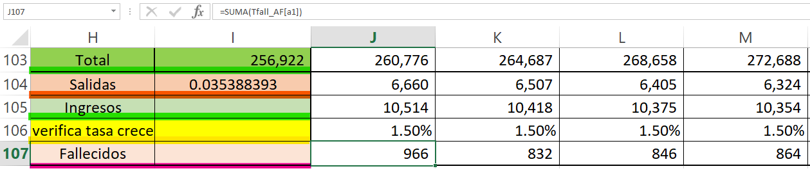
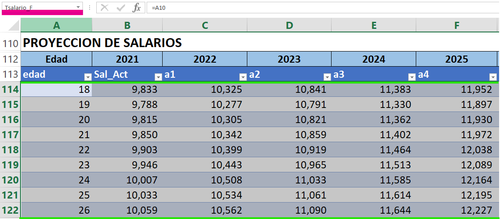
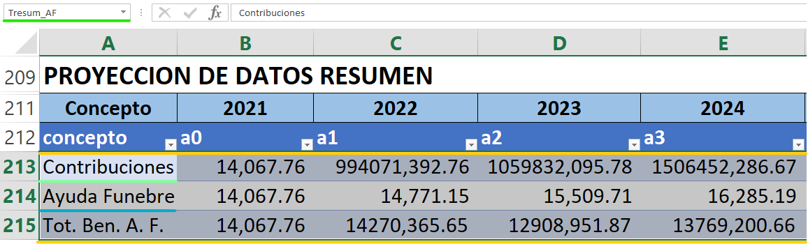
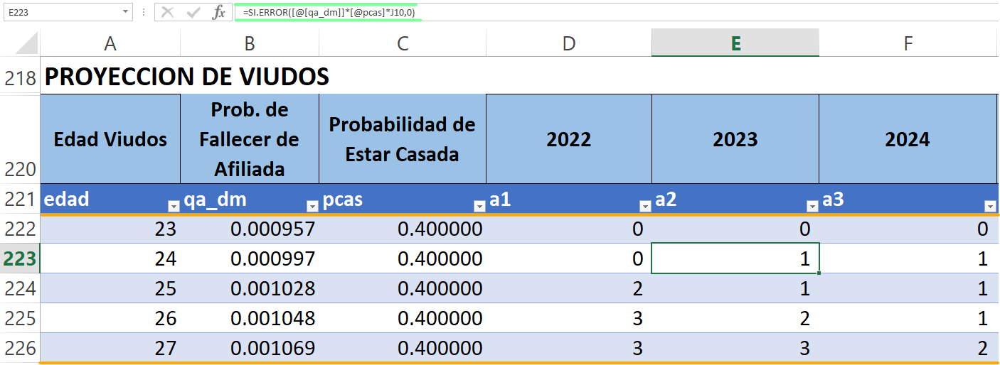
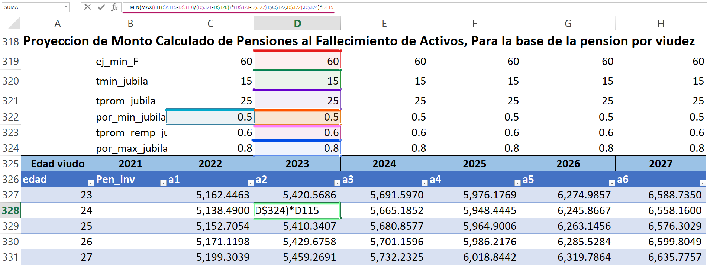
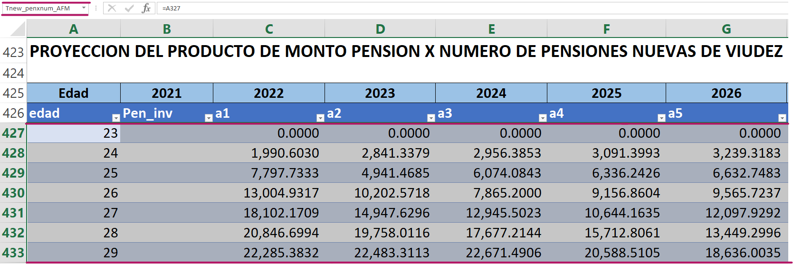
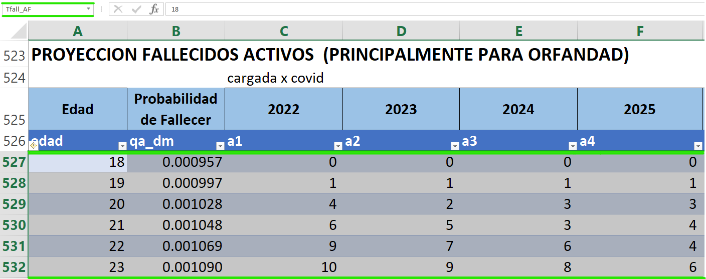
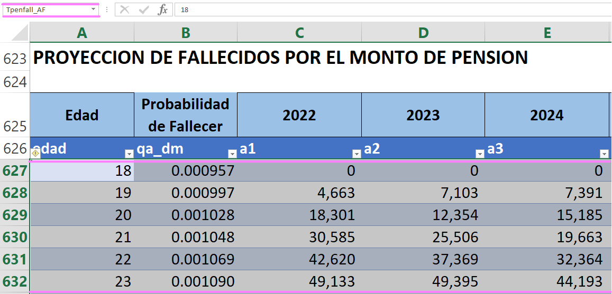

7 Activos
7.1 Activos femeninos [Activo F]
En esta tabla se encuentra información detallada sobre la cantidad de activos femeninos que se espera a lo largo de los años proyectados, también información sobre los salarios, un resumen de todos estos datos estimados, y otras proyecciones que son relevantes para el análisis, las cuales describimos a continuación:
7.1.1 Proyección de las personas
A esta tabla se le ha llamado “Tact_F” y aquí se estima la cantidad de afiliados activos de género femenino, para determinar estos datos se hacen uso de una serie de parámetros que se detallan a continuación: [qa_dm],[ia_dm],[ra_dm] y [pja_dm] Probabilidades de fallecer, invalidez, retirarse y jubilarse respectivamente. Estas son las probabilidades de que un afiliado abandone el sistema, llamados decrementos múltiples las cuales se encuentran en la hoja [Tablas] en la matriz “Tbiometrica”
- [qtot] Probabilidad total Salidas, este parámetro es la suma de todas las probabilidades antes descritas.
- [pcas] y [ping] probabilidad de estar casada y probabilidad de ingresos al sistema.
- [a1-a100] son las cantidades de afiliados activos proyectadas que se realizan en el estudio, para este análisis se hace uso de la siguiente formula:
Donde:
\(Can_{x,j}\) = Cantidad de afiliados activos femeninos de edad x en el año j.
\(Can_{x-1,j-1}\) = Cantidad de afiliados activos femeninos de edad x-1 en el año anterior.
\({qtot}_{x-1}\) = probabilidad total de salidas del sistema para un afiliado de edad x-1.
\({ping}_x\) = Probabilidad que un activo femenino de edad x ingrese al sistema.
\({Ingresos}_j\) = Cantidad de afiliados femeninos que ingresaron al sistema en el año j.
Lo antes descrito es una igualdad a la fórmula 3.3.9 Cantidad de afiliados activos proyectada que se encuentra en (Nota Técnica de Proyección de Flujos del Régimen del Seguro de Previsión Social, a diciembre 2020)
7.1.2 Tabla Resumen
En esta sección se encuentra un resumen de información necesaria como lo es el ingreso total de activos por años, las salidas de los mismos del sistema, el porcentaje de crecimiento que se estima a lo largo de los años entre otras, a continuación se describen a detalle cada una de estas:
- [Total] esta es la suma de todos los afiliados activos proyectados en el año j.
- [Salidas] representa la cantidad de afiliados activos que se esperan salgan del sistema en el año j.
Donde:
\({Can}_{x,j-1}\) = Cantidad de afiliados activos femeninos de edad x en el año anterior.
\({qtot}_{x+1}\) = probabilidad total de salidas del sistema para un afiliado de edad x+1.
- [Ingresos] es la cantidad de nuevos ingresantes al sistema, si en la hoja llamada [Proyección supuestos] la celda (act_pob_abierta) = 1 se realiza lo siguiente:
Donde:
\(por\_crece\_pob\) = porcentaje de crecimiento poblacional.
\({Total}_{j-1}\) = total de activos femeninos proyectados para el año anterior.
- [verifica tasa crece] representa la tasa de crecimiento poblacional proyectada relacionada con el año anterior y el presente, para ello se hace uso de la siguiente formula:
Este parámetro se calcula como un valor agregado para comprobar que los procedimientos realizados por Excel son verídicos, este dato es el mismo al valor estadístico planteado al inicio del modelo al cual llamamos porcentaje de crecimiento poblacional.
- [Fallecidos] esta representa la suma total de la cantidad proyectada de fallecidos activos (para orfandad) llamada “Tfall_AF” ubicada en la misma tabla. Para ello hacemos uso de lo siguiente:

7.1.3 Proyección de salarios
A esta tabla se le llamado “Tsalario_F”, para ello se hace uso de la fórmula 3.3.10 Sueldo promedio de los afiliados activos proyectado, que se encuentra en (Nota Técnica de Proyección de Flujos del Régimen del Seguro de Previsión Social, a diciembre 2020)
\[\begin{equation} {Sal\_act}_{x,j}= {Sal\_act}_{x,j-1}\times(1+{tincre\_sal}_j) \end{equation}\]Donde:
\({Sal\_act}_{x,j}\) = sueldo promedio de afiliados activos de edad x en el año j.
\({Sal\_act}_{x,j-1}\) = sueldo promedio de afiliados activos de edad x en el año anterior.
\({tincre\_sal}_j\) = porcentaje de Incremento salarial en el año j.

7.1.4 Resumen de Proyección de datos
En esta tabla se realiza un resumen de las contribuciones y ayudas que reciben los afiliados activos de género femenino, a esta tabla se le ha llamado “Tresum_AF”. Para ello vemos a detalle cada uno de los parámetros involucrados en dicha tabla
- [Contribuciones] este dato representa la cantidad total de contribuciones por afiliados activos de género femenino, para dicho cálculo se hace uso de la fórmula 3.3.7 Total de contribución de afiliados activos, que se encuentra en (Nota Técnica de Proyección de Flujos del Régimen del Seguro de Previsión Social, a diciembre 2020)
Donde:
\({Contri}_j\) = total de contribución de afiliados activos en el año j.
\({ttot\_contri}_j\) = porcentaje de contribución que realizan los afiliados activos.
\({num\_contri}_j\) = total de meses de contribución que realizan los afiliados activos en el año.
\({Can}_{j,x}\) = cantidad de afiliados activos femeninos de edad x en el año j.
\({Sal\_act}_{j,x}\) = sueldo promedio de los afiliados activos a la edad x en el año j.
- [Ayuda Fúnebre] este parámetro representa la cantidad monetaria que se le otorga a los familiares de los derecho-habientes jubilados, pensionados o fallecidos para gastos fúnebres, aquí se realiza un cálculo total por año proyectado, para ello se aplica la siguiente formula:
Donde:
\(AFunbre_j\) = ayuda monetaria que se otorga en el año j.
\(AFunbre_{j-1}\) = ayuda monetaria que se otorga en el año anterior.
\(tcrece\_afunebre\) = es la tasa de incremento del salario de referencia para otorgar beneficio de ayuda por sepelio en el año j.
- [Tot. Ben. A. F.] Total de beneficios por ayuda fúnebre, este parámetro representa la cantidad total de beneficios que se conceden por ayuda fúnebre por toda la cantidad de fallecidos para el año proyectado

7.1.5 Proyección de viudos
Este parámetro muestra la cantidad de viudos a la muerte de un activo femenino, a esta tabla se le ha llamado “Tnviudez_AFM”, Para estimar la proyección de viudos se toma en cuenta la probabilidad de fallecer para un afiliado así como la probabilidad de estar casado.
\[\begin{equation} CanV\_A_{x,j}={qa\_dm}_x\times pcas_x\times{Can}_{x-1+d,j-1} \end{equation}\]Donde:
\(CanV\_A_{x,j}\) = cantidad de viudos al fallecimiento de un activo de edad x en el año j.
\({qa\_dm}_x\) = probabilidad de decremento múltiple de que un activo fallezca a la edad x.
\(pcas_x\) = probabilidad de que un afiliado este casado a la edad x.
\({Can}_{x-1+d,j-1}\) = cantidad de afiliados activos femeninos de edad x-1 en el año anterior, d representa la cantidad de año de desfase de las edades entre hombre y mujeres tomando a d = -5 en la tabla de féminas y d = 5 en masculino.

7.1.6 Proyección de Monto Calculado de Pensiones al Fallecimiento de Activos, Para la base de la pensión por viudez
A esta tabla se le ha llamado “TMpenviud_AFM” y estos parámetros se determinan haciendo uso de la siguiente formula, la cual nos devuelve un porcentaje limitado por los valores 0.5 y 0.8 los cuales representan los porcentajes mínimos y máximos de transferencia de pensiones respectivamente formula llamada 1.3.2. Tasa de Reemplazo a la edad de Jubilación la encontramos en (Valuación de actualización Actuarial, pág. 220) y dicho valor es multiplicado por el salario promedio de los activos.
Tasa de Reemplazo a la Edad de Jubilación \[\begin{equation} TR=\ \left(t+x-ej-t_a\right)\times 1\%+50\% \end{equation}\]
Donde:
\(TR\) = tasa de reemplazo a la edad de jubilación.
\(x\) = edad del afiliado.
\(ej\) = edad mínima de jubilación.
\(ta\) = tiempo de aportaciones a la edad x en años.
\(t\) = tiempo total de aportaciones.
La ecuación antes establecida representa una igualdad a la fórmula dentro de corchetes que se muestra a continuación que es la descrita en el Excel.
\[\begin{equation} tcot_j = {tprom\_{jub}}_j + x + d - {ej\_{min}}_j \label{eq:tcot} \end{equation}\]Donde:
\(tcot_j\) = tiempo cotizado de un afiliado para el año j.
\({tprom\_{jub}}_j\) = tasa de reemplazo promedio de jubilación para el año j.
\(x+d\) = x representa la edad del afiliado y d la diferencia de edades entre hombres y mujeres para este caso, en la tabla femeninos d = -5 y en la tabla masculinos d = 0
\({ej\_{min}}_j\) = edad mínima de jubilación para el año j.
Donde:
\(cred\_jubila_j\) = crédito unitario para el año j.
\(t{min\_{jubila}}_j\) = tiempo mínimo de cotización para el año j.
\({tprom\_{remp\_{jub}}}_j\) = tasa de reemplazo promedio de jubilación para el año j.
\({por\_{min\_{jub}}}_j\) = porcentaje mínimo de transferencia de pensión para el año j.
Para determinar la proyección del monto de pensiones al fallecimiento de un activo hacemos uso de las ecuaciones de crédito unitario y tiempo de cotización, dada de la seguiente forma:
\[\begin{align} {Pen\_v}_{x,j} &= \left[ {por\_{min\_{jub}}}_j + \left( {\color{red}{tcot_j}} - \right. \right.\nonumber \\ &\qquad \left. \left. tmin\_jub_j \right) \times {\color{gray}{cred\_jubila_j}}\right] \times Sal\_{act_{x+d,j}} \end{align}\]Donde:
\({Pen\_v}_{x,j}\) = monto de pensiones al fallecimiento de un activo de edad x en el año j.
\({Sal\_act}_{x+d,j}\) = sueldo promedio de afiliados activos de edad x+d en el año j.

7.1.7 Proyección Del Producto De Monto Pensión por Numero De Pensiones Nuevas De Viudez
A esta tabla se le ha llamado “Tnew_penxnum_AFM”, aquí se establece el monto total de las pensiones para un viudo al fallecimiento de su esposa activa, estos parámetros son el resultado de la multiplicación del monto de pensión al fallecimiento de un activo de edad x en el año j ubicados en la tabla “TMpenviud_AFM” y el número de viudos proyectados de edad x en el año j.
\[\begin{equation} {TPen\_v}_{x,j}={Pen\_v}_{x,j}\times{CanV\_A}_{x,j} \end{equation}\]Donde:
\({TPen\_v}_{x,j}\) = monto Total de pensiones al fallecimiento de un activo de edad x en el año j.
\({Pen\_v}_{x,j}\) = monto de pensiones al fallecimiento de un activo de edad x en el año j.
\(Can{V\_A}_{x,j}\) = cantidad de viudos al fallecimiento de un activo de edad x en el año j.

7.1.8 Proyección Fallecidos Activos (Principalmente Para Orfandad)
A esta tabla se le ha llamado “Tfall_AF”, aquí se establece la cantidad de activos fallecidos de género femenino, dichos parámetros se determinan haciendo el producto de la probabilidad de fallecer o salidas por muerte [qa_dm] de la sección de decrementos múltiples y la cantidad de personas proyectadas de edad x-1 en el año anterior \({Can}_{x-1,j-1}\) ubicados en la tabla “Tact_F”.
\[\begin{equation} {Mue}_{x,j}={Can}_{x-1,j-1}\times{qa\_dm}_x \end{equation}\]Donde:
\(Mue_{x,j}\) = cantidad de afiliados activos que fallecen a la edad x en el año j.
\(Can_{x-1,j-1}\) = cantidad de afiliados activos de edad x-1 en el año anterior.
\({qa\_dm}_x\) = probabilidad de decremento múltiple de que un activo fallezca a la edad x.

7.1.9 Proyección De Fallecidos Por El Monto De Pensión
A esta tabla se le ha llamado “Tpenfall_AF” Este parámetro determina la cantidad de pensión total proyectada para todos los fallecidos de edad x en el año j , este se obtiene multiplicando la probabilidad de fallecer [qa_dm] por el monto calculado de pensiones al fallecimiento de activos de edad x en el año j ubicados en la tabla “TMpenviud_AFM” y la cantidad de activos proyectados para el año anterior \({\ CantA}_{j-1,x-1+z}\) ubicado en la tabla “Tact_F”.
\[\begin{equation} {TMue}_{x,j}={qa\_dm}_x\times{Pen\_v}_{x+5,j}\times{Can}_{x-1+d,j-1} \end{equation}\]Donde:
\({TMue}_{j,x}\) = cantidad total de montos de pensiones por fallecimiento de activo de edad x en el año j.
\({qa_dm}_x\) = probabilidad de decremento múltiple de que un activo fallezca a la edad x.
\(Can_{j-1,x-1+z}\) = cantidad de afiliados activos proyectada a la edad de x-1+d años para el año anterior, d = 0 en caso femenino y d = 5 en caso masculino.
\({Pen\_v}_{x,j}\) = monto de pensiones al fallecimiento de un activo de edad x en el año j.

NOTA: Todos los parámetros y tablas antes descritas siguen el mismo patrón y proceso para el caso masculino, habiendo ligeros cambios en los nombres y variables siendo estos cambios por la inicial del género (M).